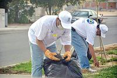

الجديد
18/07/2010
سكان حي في جدة يعالجون تردي أوضاع النظافة بحملة لـ200 متطوع أرسلوا لـ«الأمانة» تقريرا مصورا يظهر إهمال المخلفات والنفايات متطوعون من سكان «مسرة» أثناء أعمال النظافة («الشرق الأوسط») جدة: بدر القحطاني شرع 200 متطوع من سكان حي «النعيم 4» في التفاعل مع حملة أطلقتها ديوانية المسجد المتوسط لحيهم، جاءت بعنوان «نظافتي مسؤوليتي»، وهي بحسب منظميها، ترسيخ ونشر لثقافة النظافة وممارسة سلوك محافظ للبيئة، يدفع الأهالي إلى عدم تقبل المخلفات المتراكمة حول منازلهم أو في أرجاء الحي الذي يعتبره قاطنوه نموذجيا. ومن الميدان، يتابع المهندس محمد سيبية وهو مسؤول لجنة الصيانة والسلامة التابعة لديوانية الحي، سير أعمال فعالية النظافة، جازما بأن الحي، كان قبل أقل من سنة، نموذجا مثاليا للأحياء الحديثة في جدة، بيد أنه وصف حال الحي بـ«تردي النظافة والإهمال المشترك من قبل الأمانة والسكان»، ما دفع ديوانية المسجد، إلى مراسلة الأمانة عن طريق مركز الحي، سائلة إياها تنظيم فعاليات، أبرزها حملة «نظافتي مسؤوليتي». وانطلقت الحملة مساء الجمعة الماضي، بعد أن أعلن إمام مسجد «عائشة» الذي يتوسط (مخطط مسرة)، عن تقسيم الحي إلى 4 مناطق، حيث يشارك المتطوع وأبناؤه وجيرانه في تنظيف المنطقة التي يقع فيها منزلهم، بمساعدة أمانة جدة، التي زادت عدد الحاويات منذ وقت قريب في كافة أرجاء الحي، ونشرت عمال النظافة لمساعدة أهالي وسكان الحي في التنظيف. فيما حذر مشرف الحملة المتطوعين خلال التجمع في المسجد، من الاقتراب من المخلفات الطبية أو التي يشتبه أن تكون كيميائية، والاكتفاء بتنظيف المخلفات الدارجة كالبلاستيك، ومعلبات العصير والغازيات، ومخلفات البناء. ويؤكد المهندس سيبية لـ«الشرق الأوسط»، استغرق رد الأمانة نحو 7 أشهر، بعد أن أرسلنا تقريرا مصورا - تحتفظ (الشرق الأوسط) بنسخة منه - حول تردي الأوضاع في الحي، لكنه يشير إلى أنهم لبوا الدعوة، ووفروا المتطلبات بعد أن أجازوا مبادرة أهالي الحي. بينما لفت المهندس عبد المجيد بن سالم البطاطي مساعد وكيل الأمانة للنظافة والمرادم، إلى تجاوب الأمانة سريعا مع مبادرة الحي، لكنه عزا في المقابل، تأخر الأمانة، إلى بعض المقترحات الأخرى التي طالبوا بها، قائلا «إنها تحتاج إلى الدخول في قنوات رسمية لا تملك الأمانة التعجيل في تنفيذها». المهندس البطاطي دعا جميع مراكز الأحياء في جدة، إلى تبني الفكرة نفسها، مؤكدا لـ«الشرق الأوسط» استعداد الأمانة لدعم وتشجيع جميع الأحياء التي تريد أن تطبق حملات نشر النظافة والمحافظة على البيئة. وقال «نعاني في جل الأحياء، من عدم استجابة الناس لرمي النفايات والمخلفات في الحاويات المخصصة لها، إلى جانب تصرفات نرصدها جميعا، من رمي عشوائي للأوراق والمخلفات الصغيرة عبر السيارات، ومن المنازل أيضا». ويشير مساعد وكيل الأمانة للنظافة والمرادم، إلى أن العملية لا تقتصر على جهة واحدة، في إشارة إلى ضرورة مشاركة الأهالي في الحفاظ على ما تنفذه الأمانة من أعمال. ويعد شمال مدينة جدة، منطقة حديثة بالنسبة إلى المدينة التي كان يتمركز السكان وسطها وجنوبها، وفي ناحية الشرق مؤخرا، ما دفع معظم أحياء الشمال إلى تلافي الأخطاء التخطيطية في الأحياء القديمة سابقا. ولكن، بعد مرور أكثر من 6 أشهر على كارثة السيول، يشير سكان جدة، إلى اهتمام الأمانة بشرق جدة وجنوبها، وإهمال الشمال الذي كان يحظى كما يزعم أهالي الشرق والجنوب باهتمام الأمانة. وحول ذلك، يؤكد المهندس المطاطي لـ«الشرق الأوسط» أن الأمانة، توسع نشاطها في جميع المناطق دون تمييز. وعقب الانتهاء من الحملة التي استمرت ليومين، «لم تقتصر ديوانية المسجد على النشاط فقط، حيث بدأت الديوانية فورا، في دعوة خبير ليلقي محاضرة بعنوان (تثبيت التغيير)»، كما قال المهندس سيبية، الذي أضاف: «نهدف إلى نشر ثقافة النظافة لدى السكان، لذلك حرصنا على تأدية منظومة متكاملة، تحمل جانبا عمليا يتمثل في النظافة، وجانبا فكريا يتمثل في المحاضرات». لافتا إلى أن الفعاليات ستستمر على مدار العام، «وسنساهم في نشر تبني فكرة الاعتراض على التقصير، لدى الشبان والكبار أيضا، ودفع الجميع إلى مناقشة كل الأمور الخارجة عن السلوك النظيف الذي يعكس الهوية الرافضة للإهمال». وشاركت جمعية «أصدقاء جدة» وهي مجموعة متطوعين تكاتفوا للقيام بعمل تطوعي حبا في مدينتهم كما يقول أحد الشبان، الذي طلب حجب اسمه، مضيفا «نحرص دوما على المساهمة في الأعمال التطوعية التي تعكس حبنا لمدينة جدة، وسنستمر في أي أنشطة أخرى مشابهة، وذلك عبر التواصل مع مشرفي المجموعة أو عبر موقعها الإلكتروني». وبالعودة إلى نشأة حملة النظافة والأنشطة الأخرى في حي «النعيم 4»، قال المهندس جمال المنذري مدير برنامج «أصدقاء جدة»، إن الفكرة ولدت في مسجد «عائشة» من قبل سكان الحي وإمام المسجد بالتنسيق مع مراكز الأحياء، إذ تقدموا باقتراح يهدف إلى تطوير الحي، وبناء عليه وضعت أولويات التطوير والبدء في أعمال النظافة، باعتبارها أولوية للسكان. نشر في جريدة الشرق الأوسط في التاريخ: الخميـس 03 شعبـان 1431 هـ والموافق 15 يوليو 2010 العدد 11552